ANAで行くお得な国内旅行
バナー構成ポイント
- 構図：対角線（デザインに躍動感・迫力・奥行きを付けたい）
- 色彩計画
- ベースカラー（#43913b）
- アクセントカラー（#e34f42）
- アソートカラー（#095a39）
- ペルソナ（飛行機を使う国内旅行を考えている人）
- アピールポイント（Webでまとめて予約が可能）
斜めの画像を水平位置に傾ける
- 「ものさしツール」で、水平にする位置を「ドラッグ」して決める
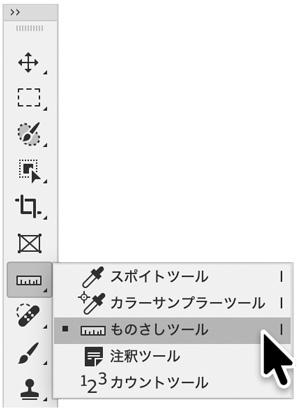
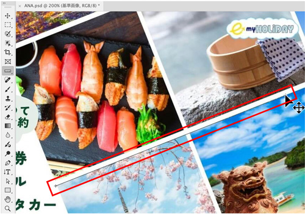
角度「21.63」を記録しておく
- 「イメージ」メニュー → 「画像回転」→「角度入力」
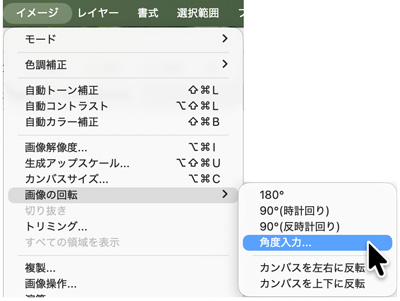
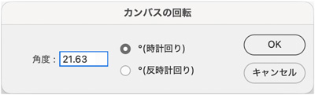
シェイプツール（長方形）でマスク用の四角を描画
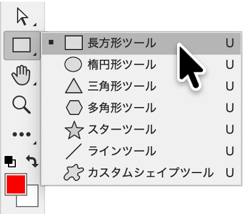
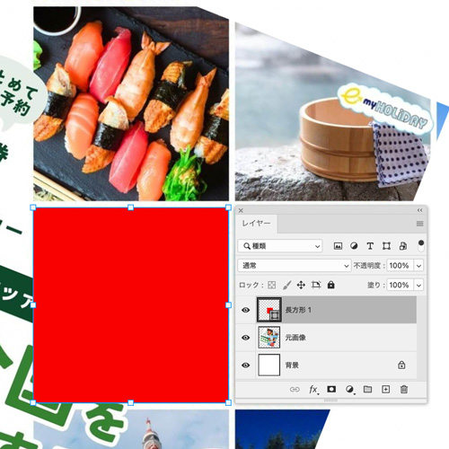
写真の数のマスク用の四角を複製
- 下から順に配置名を付けておく
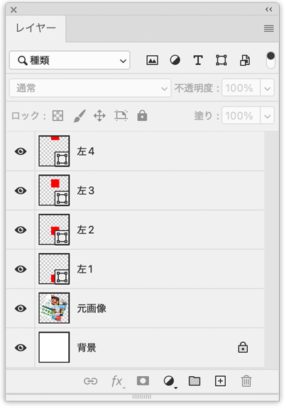
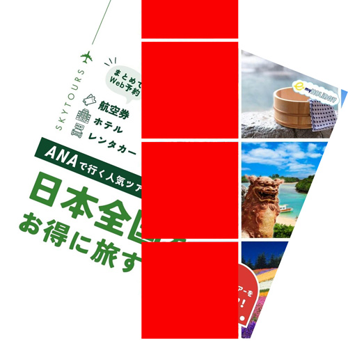
等間隔配置
- レイヤーを選択し、レイヤーオプションの「整列」で「均等配置」します
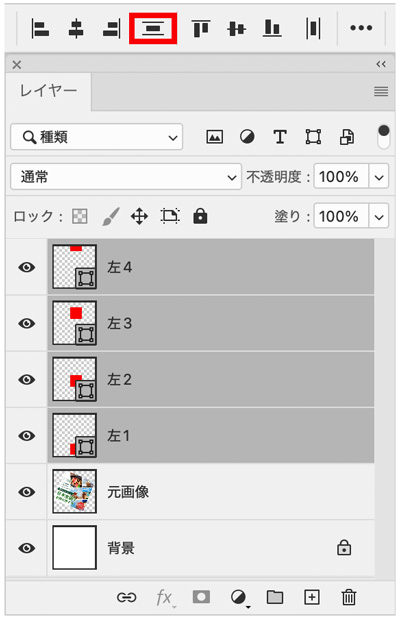
このまま右にコピーを作成
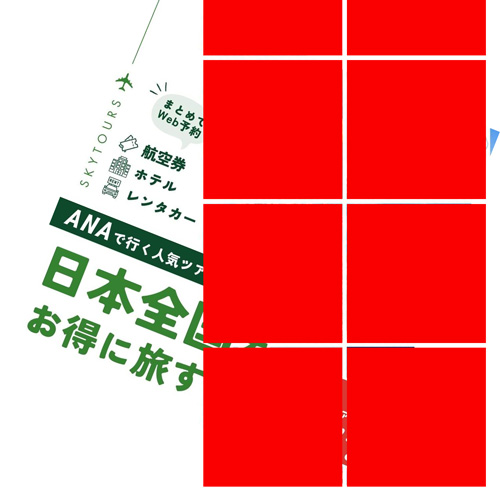
レイヤーまとめて「グループ化」
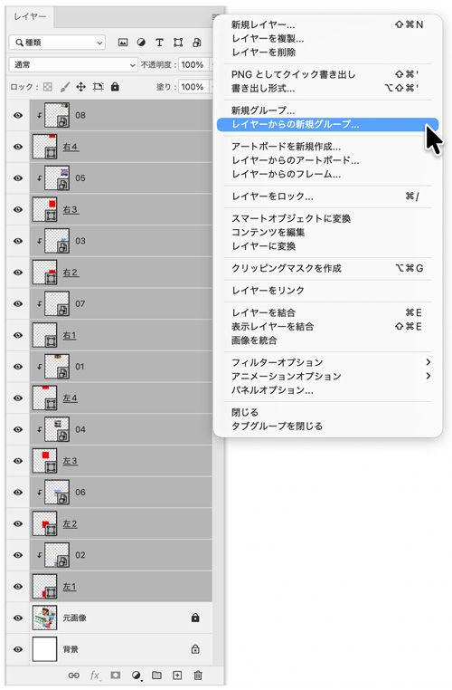
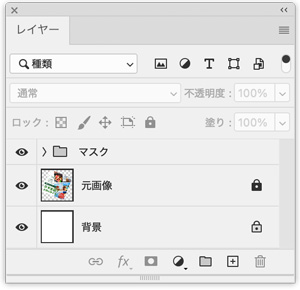
角度を元に戻す
- 「イメージ」メニュー → 「画像回転」→「角度入力」
- 角度「-21.63」
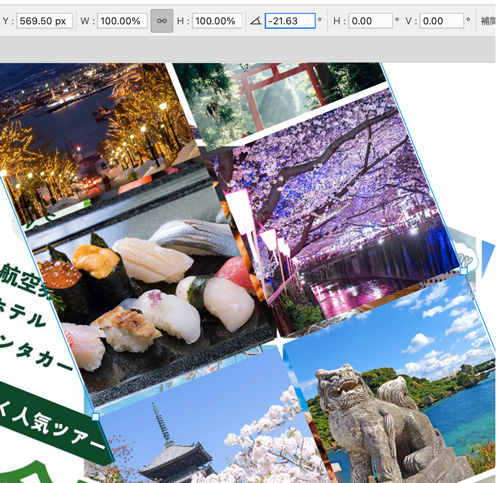
元画像に配置し微調整する
- 幅：1080px、高さ：1080px に元画像を配置
- レイヤーグループを移動配置して微調整する
- 元の画像の位置から少しずらす（右端の画像を除いた位置に配置）
文字をIllustratorで作成
- 文字詰めを見本に合わせるため、下絵を利用する
新規ドキュメント作成
- 幅：1080px、高さ：1080px のアートボード
- 元画像を配置
- 配置レイヤーの「サムネイル」をダブルクリックして「レイヤーオプション」を表示
- 「テンプレート」にチェックをつけて「下絵」にする
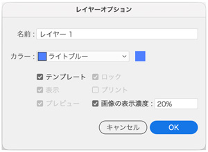
- 「新規レイヤー」を作成し、文字を入力する
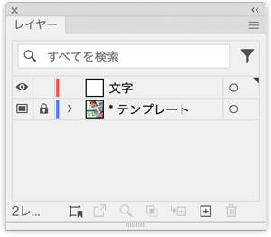
レイヤースタイル「ドロップシャドウ」で白い縁取り文字にする
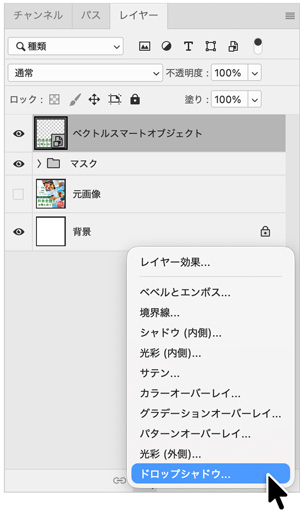
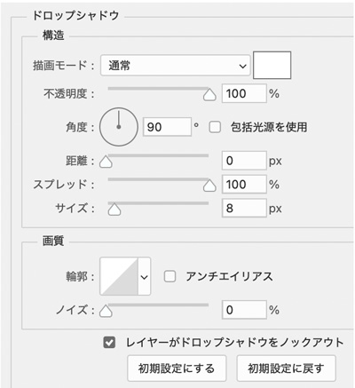
ここまでのレイヤー
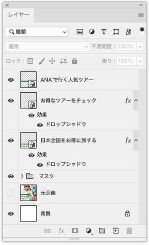
サービス・ポイントを追加
- Illustratorで作成したパーツを「コピー」
- Photoshop上で「ペースト（スマートオブジェクト）」
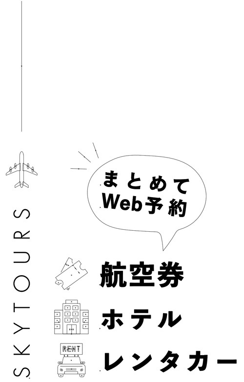
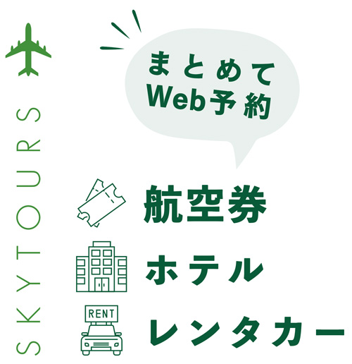
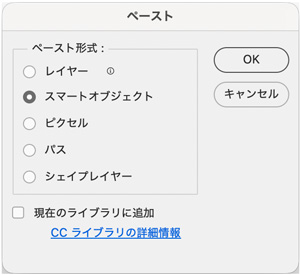
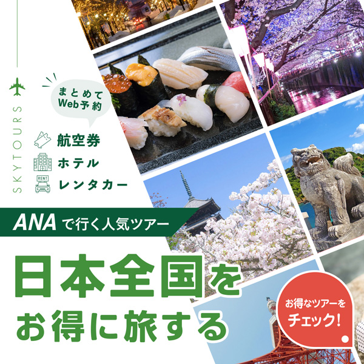
整列でオブジェクトと文字を中央揃え
- 文字ボックスは、「ベースライン」の下部の「ディセンダ」のスペースが余白として確保されています
- このスペースがあると「整列」で、見栄えとしての中央揃えができません
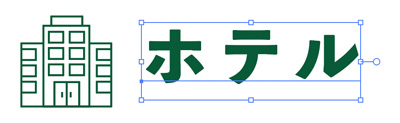
アピアランスを設定
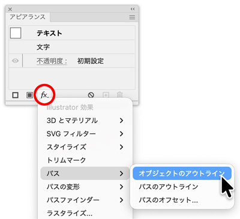
- 「整列」→「プレビュー境界を使用」
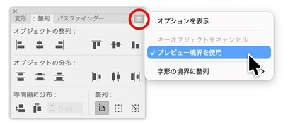
- 「オブジェクト」と「文字」を上下の中央に揃えた結果
ロゴ追加
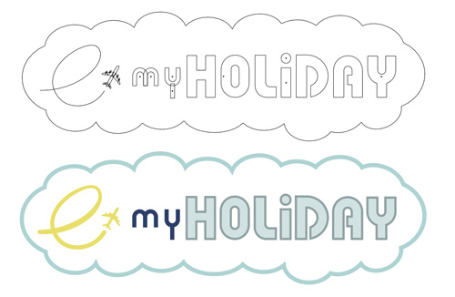
完成
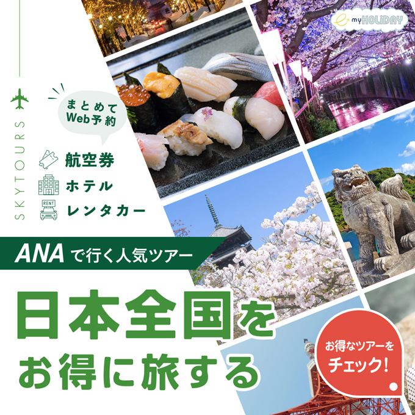